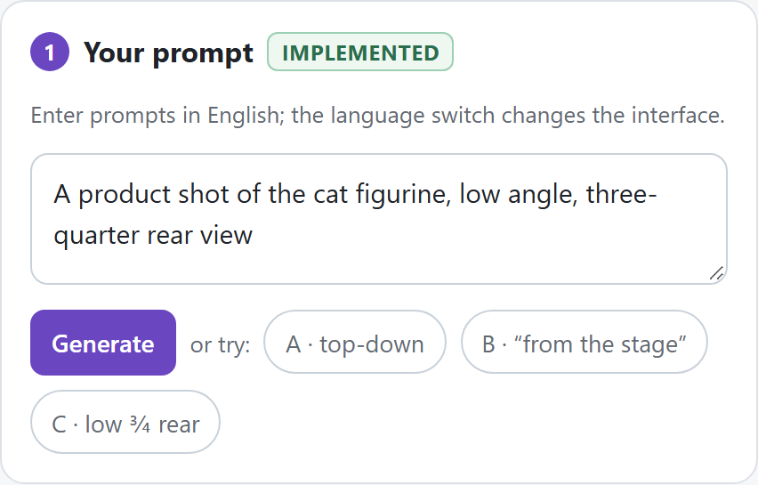
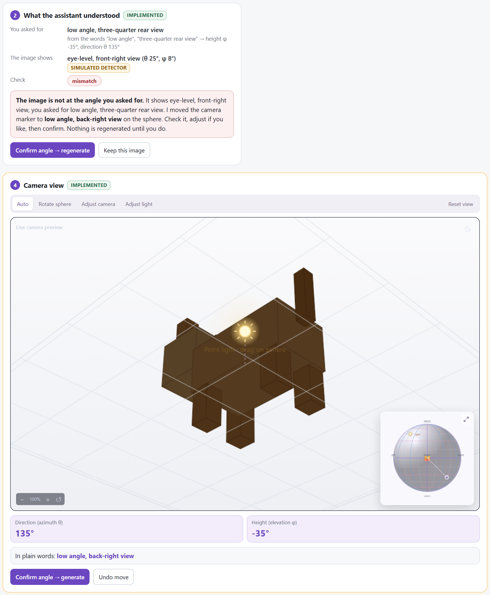
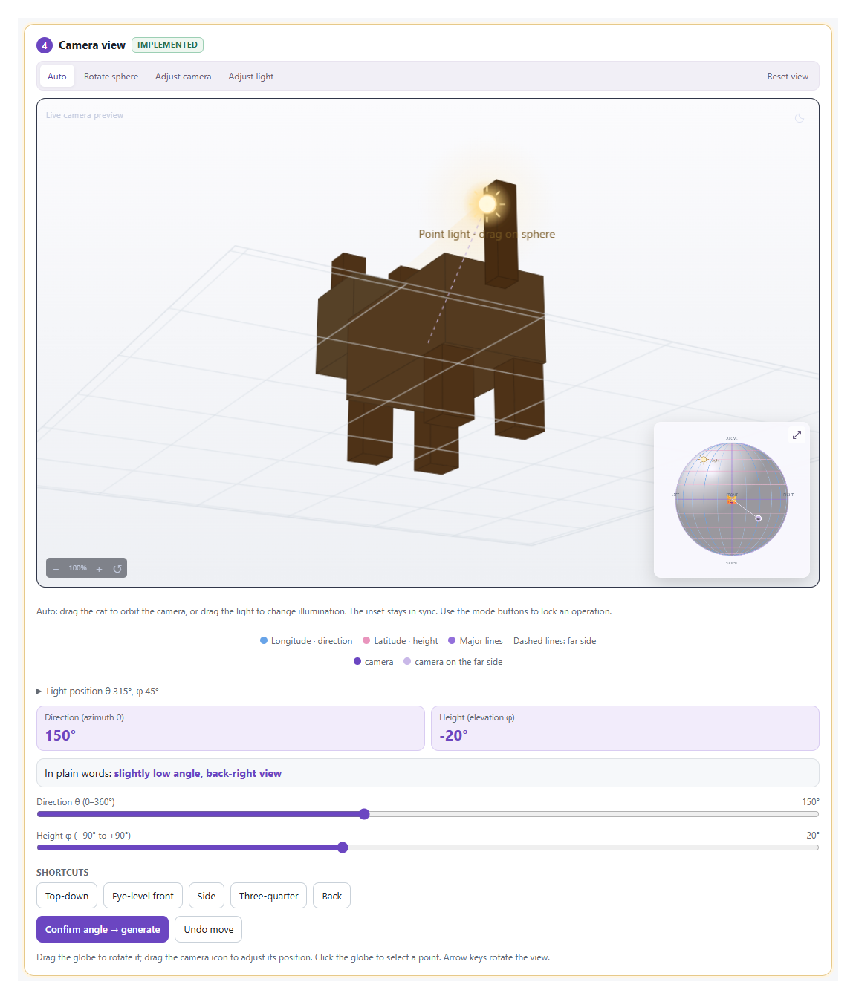
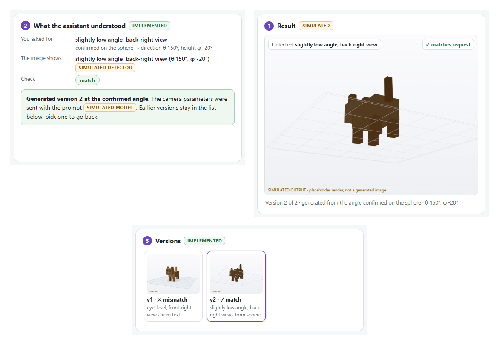

A product designer wants a low three-quarter rear view and adjusts it exactly, then compares versions.
Frames are screenshots of prototype/index.html. implemented runs in the prototype · simulated stand-in for the image model and the viewpoint detector (placeholder 3D render).




Viewpoint Assistant · Assignment 2 · every image in the frames is a simulated placeholder, not a generated image.